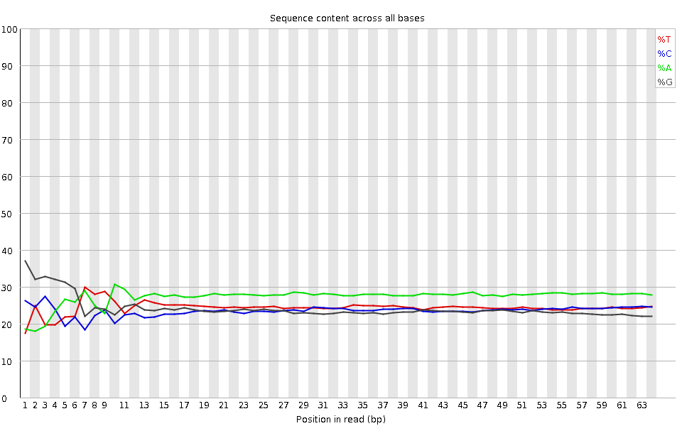
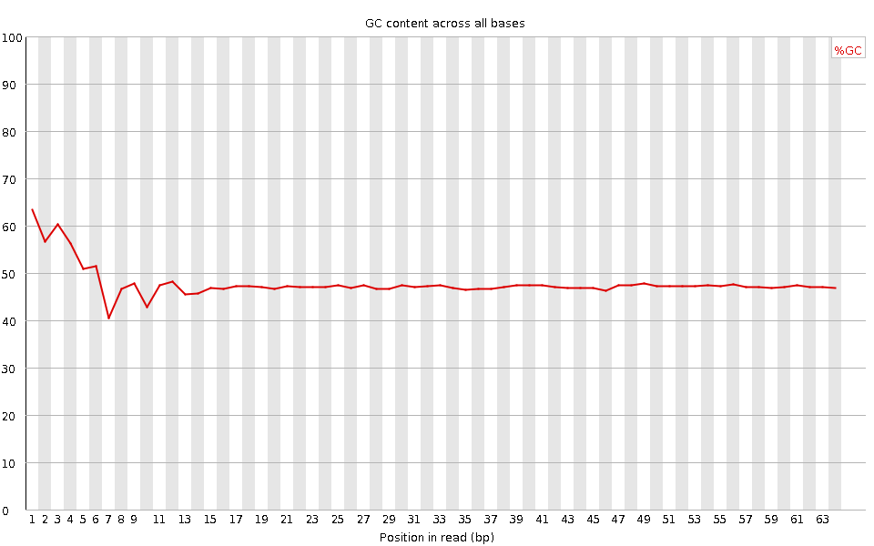
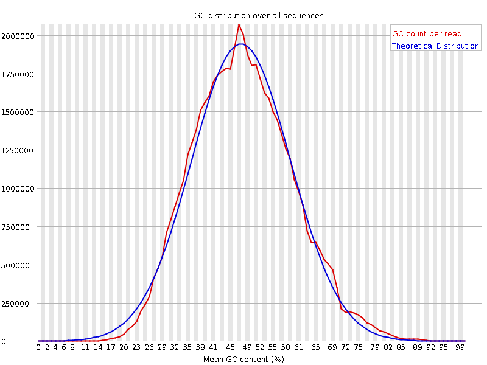
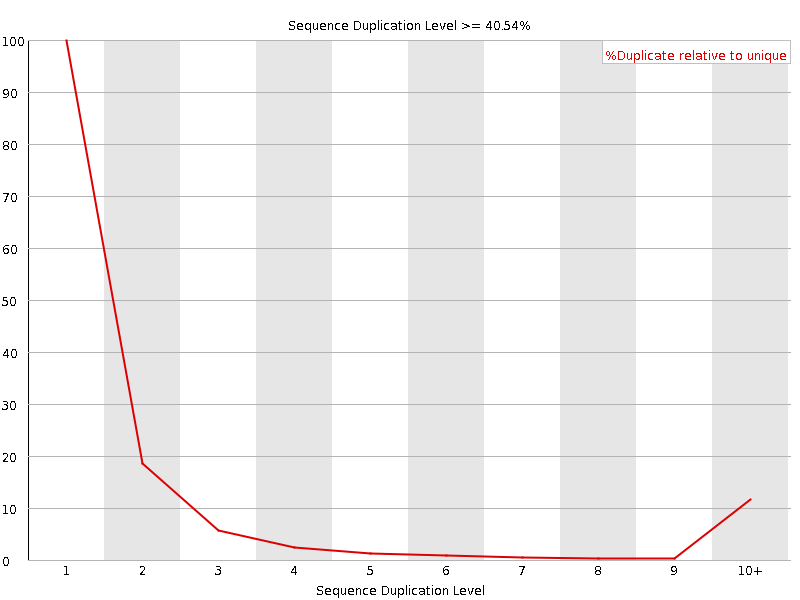
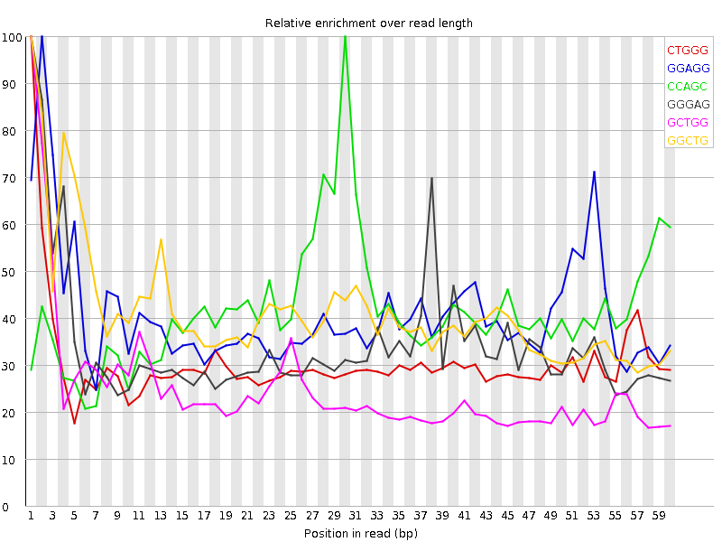

![[OK]](Icons/tick.png) Basic Statistics
Basic Statistics
| Measure | Value |
|---|---|
| Filename | SRR315305_pe_1.f.fastq |
| File type | Conventional base calls |
| Encoding | Sanger / Illumina 1.9 |
| Total Sequences | 36254600 |
| Filtered Sequences | 0 |
| Sequence length | 64 |
| %GC | 47 |
Per base sequence quality

Per sequence quality scores

![[WARN]](Icons/warning.png) Per base sequence content
Per base sequence content

![[FAIL]](Icons/error.png) Per base GC content
Per base GC content

Per sequence GC content

Per base N content

Sequence Length Distribution

Sequence Duplication Levels

Overrepresented sequences
| Sequence | Count | Percentage | Possible Source |
|---|---|---|---|
| GCTGGATAGTAGGTAGGGACAGTGGGAATCTCGTTCATCCATTCATGCGCGTCACTAATTAGAT | 105646 | 0.2914002636906765 | No Hit |
| GGTTGGTGCGCGGACACGCACTGCCTGCGTAACTAGAGGGAGCTGACGGATGACGCCCCCGCGC | 85812 | 0.23669272313030623 | No Hit |
| CGCTGGATAGTAGGTAGGGACAGTGGGAATCTCGTTCATCCATTCATGCGCGTCACTAATTAGA | 77188 | 0.21290539683240195 | No Hit |
| GGCGGGGGTGCGTCGGGTCTGCGAGAGCGCCAGCTATCCTGAGGGAAACTTCGGAGGGAACCAG | 65531 | 0.18075223557838177 | No Hit |
| GTCGGCATGTATTAGCTCTAGAATTACCACAGTTATCCAAGTAGGAGAGGAGCGAGCGACCAAA | 59049 | 0.16287312506550894 | No Hit |
| CTGGATAGTAGGTAGGGACAGTGGGAATCTCGTTCATCCATTCATGCGCGTCACTAATTAGATG | 52643 | 0.14520364312390704 | No Hit |
| CCGTCGGCATGTATTAGCTCTAGAATTACCACAGTTATCCAAGTAGGAGAGGAGCGAGCGACCA | 49353 | 0.13612893260441433 | No Hit |
| CCCGTCGGCATGTATTAGCTCTAGAATTACCACAGTTATCCAAGTAGGAGAGGAGCGAGCGACC | 42952 | 0.11847324201618553 | No Hit |
Kmer Content

| Sequence | Count | Obs/Exp Overall | Obs/Exp Max | Max Obs/Exp Position |
|---|---|---|---|---|
| CTGGG | 4440745 | 2.448708 | 8.028926 | 1 |
| GGAGG | 4987650 | 2.393192 | 5.8465543 | 2 |
| CCAGC | 4492160 | 2.3327444 | 5.5767326 | 30 |
| GGGAG | 4756930 | 2.2824872 | 6.656832 | 1 |
| GCTGG | 4031990 | 2.223313 | 8.968708 | 1 |
| GGCTG | 3963900 | 2.185767 | 5.287164 | 1 |
| TTCAT | 4210510 | 2.010798 | 6.1305194 | 42 |
| CTGGA | 3755075 | 1.8308239 | 5.2273245 | 2 |
| GGCAG | 3715515 | 1.8303919 | 5.2455254 | 1 |
| GTGGG | 3362225 | 1.8057786 | 7.932273 | 1 |
| GGGGG | 3244230 | 1.7605422 | 10.442358 | 2 |
| GGGGA | 3609940 | 1.7321343 | 7.5713286 | 1 |
| GCGCC | 2929720 | 1.7206451 | 5.9519453 | 27 |
| TCACT | 3408880 | 1.6888304 | 5.0482397 | 52 |
| TGGGG | 2901725 | 1.558454 | 6.7581654 | 2 |
| GGGGT | 2830760 | 1.5203401 | 8.740468 | 3 |
| GGGTC | 2730955 | 1.5058986 | 5.0995717 | 4 |
| GGGTG | 2791350 | 1.499174 | 5.3702474 | 2 |
| GTGGT | 2795315 | 1.4858378 | 5.50389 | 1 |
| ATCCA | 3206175 | 1.419075 | 5.449774 | 37 |
| CGGGG | 2350350 | 1.309516 | 8.484901 | 1 |
| GGGCT | 2360805 | 1.3017911 | 5.052591 | 3 |
| GGTGC | 2217010 | 1.2224998 | 6.4515944 | 5 |
| GGCGG | 2151000 | 1.1984466 | 7.5278153 | 1 |
| GCGGG | 2050535 | 1.1424717 | 6.127789 | 1 |
| GTGCG | 1346120 | 0.7422752 | 5.024965 | 6 |